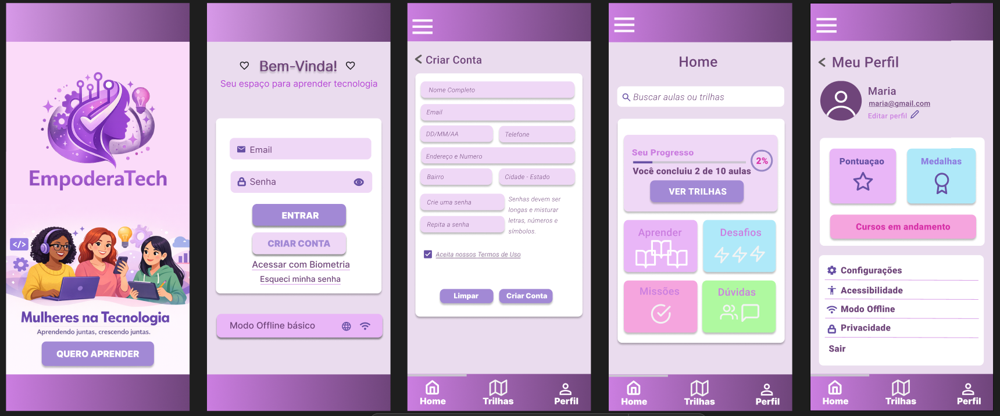

Nome: Trabalho desenvolvido para a materia de Fundamentos de Desenvolvimento de Software
Descrição: Criação de uma página web simples, aplicando conceitos de HTML, CSS e
JavaScript. O projeto envolveu estruturação de conteúdo, estilização visual e
funcionalidades interativas básicas.
Tecnologias: HTML, CSS, JavaScript
Aprendizado: Estruturação de páginas, design responsivo, manipulação
de elementos com JS.
Ver Projeto
Nome: Trabalho desenvolvido para a materia de
Design de Interaçao
Descrição: Desenvolvimento de um protótipo interativo
de alta fidelidade para um aplicativo bancário de smartphone. O projeto simulou
navegação, fluxos de usuário e experiência de interação.
Tecnologias: Figma
Aprendizado: Prototipagem, design de experiência do
usuário, criação de fluxos interativos
Ver Projeto
Nome: Atividade Extensionista
Descrição: Desenvolvimento de um aplicativo móvel
que promova a inclusão digital e o aprendizado de programação entre mulheres de
diferentes idades, estimulando a participação feminina na área de tecnologia e
contribuindo para a igualdade de gênero
Tecnologias: Figma
Aprendizado: Planejamento de projeto social, design
de interface acessível, inclusão digital.
Ver Projeto

Protótipo do aplicativo de inclusão digital para mulheres, mostrando as tela principais do app.